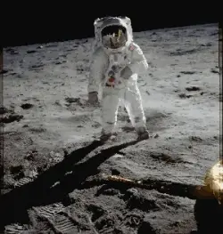

Jorse
In Progress
A Virtual Telegraph
Use Jorse to transmit dots and dashes to other Jorse users.
Type in their ip & port to establish a connection and start pressing the key. You can hear incoming and outgoing beeps as well as see an accompanying indicator light.
Jorse can handle multiple connections at once and will save incoming transmissions so you can play them when you're ready.
This project started because I wanted to prove to myself I could program in Java. I also learned a lot about compression, encryption, networking, and software design.

J for Java, orse for Morse.